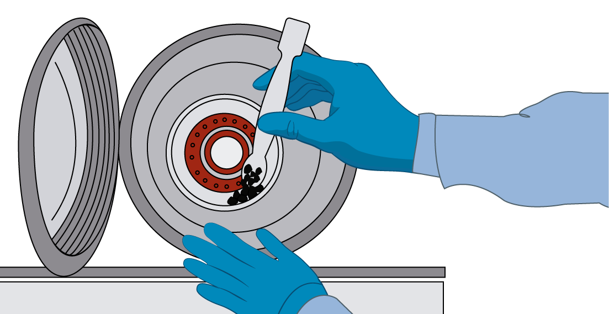
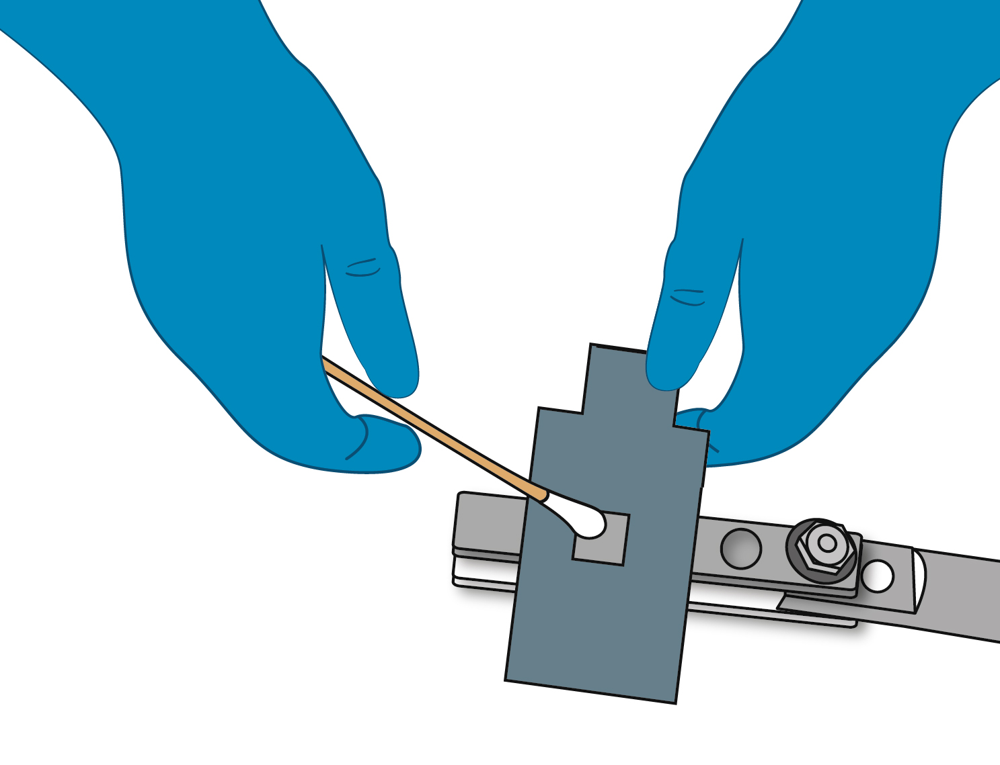
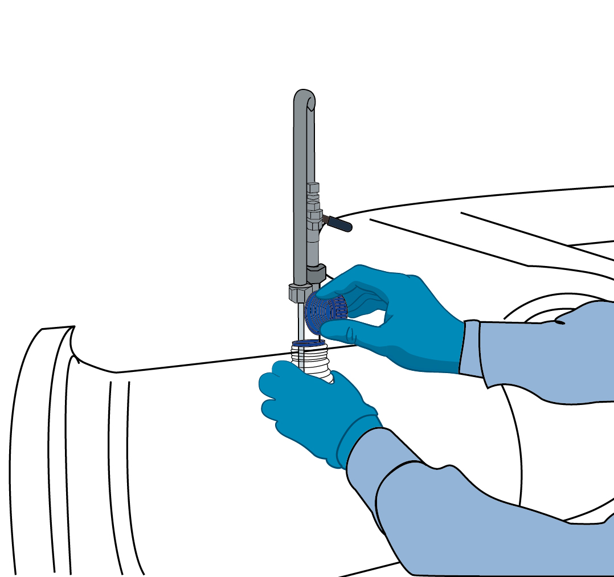

KITS - Nuestras referencias

Muestras Sólidas
Kit para la recolección de muestras solidas asociadas a procesos de crecimiento microbianos
Descargar Ficha Técnica

Muestras Superficies
Kit para toma de muestras de agentes microbianos asociados a la formación de biopelículas en superficies.
Descargar Ficha Técnica

Muestras Líquidas
Kit para la recolección de muestras líquidas asociadas a procesos de crecimiento microbianos
Descargar Ficha Técnica